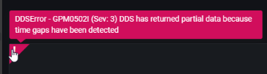
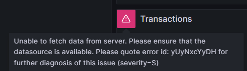

Error reporting in the plugin
Whenever you encounter issues while using the IBM RMF for z/OS Grafana plugin, you can view detailed error messages that contain sufficient information to help you identify and troubleshoot the problem.
By viewing these error messages, you can quickly and efficiently troubleshoot any issues you may encounter while using the IBM RMF for z/OS Grafana plugin.
| Type | Error Code | Description |
|---|---|---|
| Severe | S | A critical error has arisen that will cause the task you are currently
performing to terminate immediately. It is essential to take necessary measures to prevent such errors to ensure the smooth functioning of the IBM RMF for z/OS Grafana plugin. |
| Eventual Action | E | An error of a transient nature has arisen but can be resolved with an action by the user. |
| Warning | W | Receiving a warning message from the IBM RMF for z/OS Grafana plugin is not indicative of an error within the application. |
| Information | I | An information message informs the users about changes or updates in
the IBM RMF for z/OS Grafana plugin. You need not take any action in response, but it's essential to stay up-to-date and be aware of these updates. |
When an error occurs, it is assigned a unique Error ID that can help quickly identify the root cause of the issue by referring to the log file. The Error ID is a combination of 10 characters comprising lower and upper case alphabets.
In case of any problems with the Distributed Data Server (DDS), you can identify the issues by looking into DDS-specific errors, which will be displayed without any modifications. The messages issued by the Distributed Data Server are documented in the Distributed Data Server messages - GPM topic in the z/OS Resource Measurement Facility Messages and Codes.
The following are the examples of error messages that you may encounter while using the IBM RMF for z/OS Grafana plugin:


docker logs <container_name> 2>&1 | grep "<unique error code shown in the error message>"